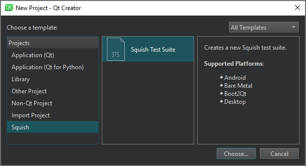
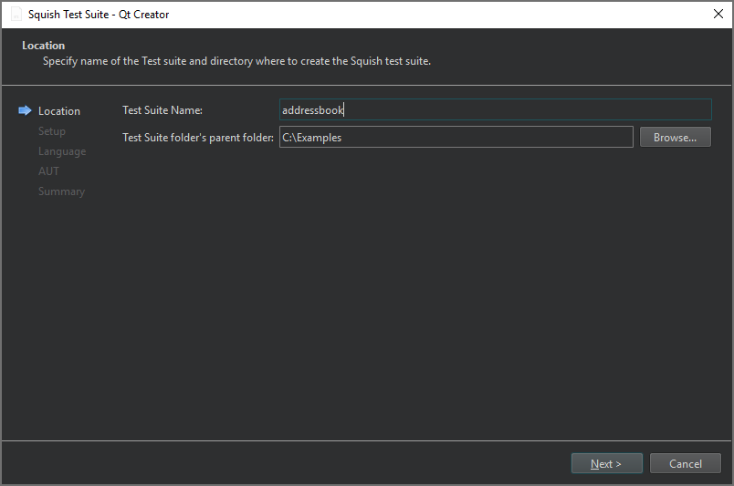
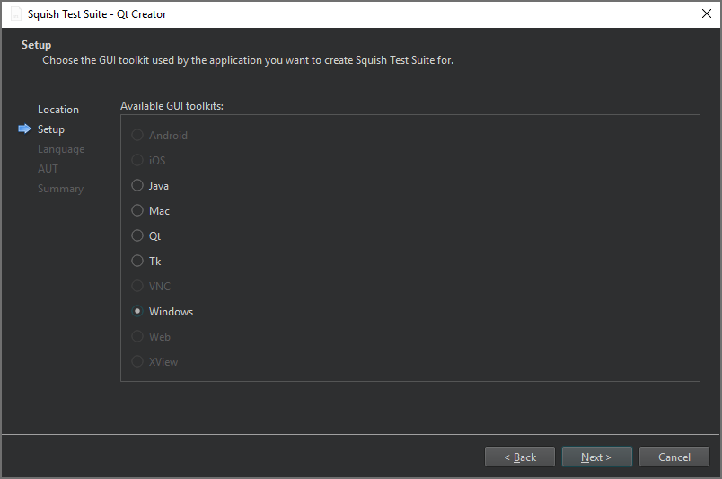
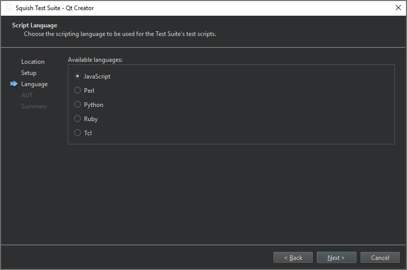
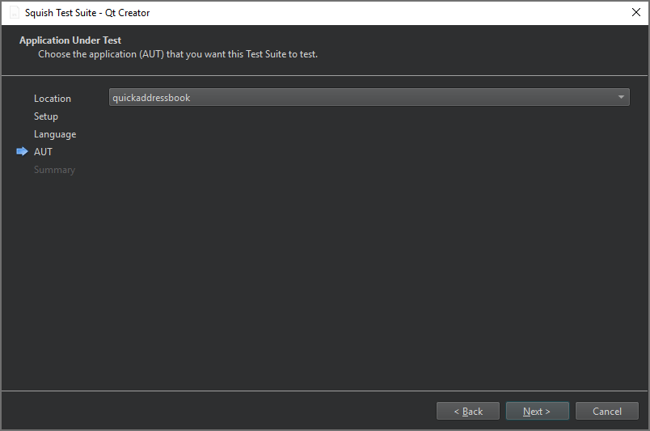

Create Squish test suites
To create a new test suite:
- Go to File > New Project.
- Select Squish > Squish Test Suite > Choose.

- On the Location page, in Test Suite Name, enter a name for the test suite.

- In Test Suite folder's parent folder, enter the path to the folder to create the test suite folder, and then select Next.
- On the Setup page, select the GUI toolkit used by the application under test (AUT), and then select Next.

Currently, only desktop GUI toolkits are supported.
- On the Script Language page, select the scripting language to use for the test suite's test scripts, and then select Next.

- On the AUT page, select the AUT to test, and then select Next.

- On the Summary page, review the test suite settings, and then select Finish to create the test suite.
The test suite is listed in Test Suites in the Squish sidebar view.
See also Connect to Squish Server, Manage Squish test suites and cases, Enable and disable plugins, Select Squish AUTs, and Squish.